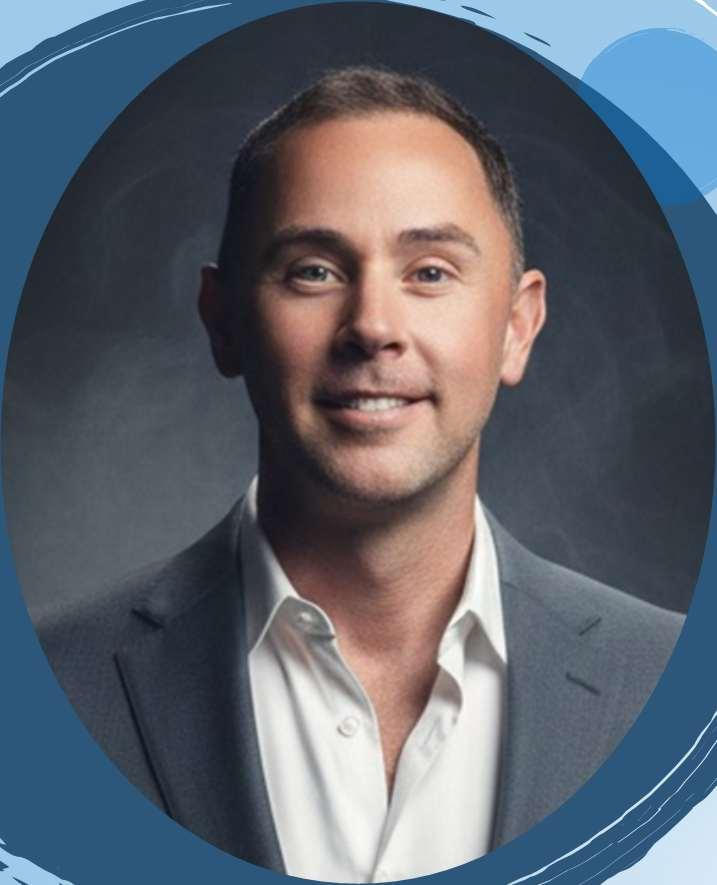

Built by a physicist,
for physicists.
Radiant Medical Physics Consulting is the consulting practice of Todd Bernath, MS — an Ohio-based medical physicist with two decades of clinical experience in external-beam radiation therapy, brachytherapy, and the software that runs them.

Background
Todd’s path into medical physics started on the treatment floor. He earned his B.S. in Radiation Therapy from Indiana University in 1995 and worked as a board-certified radiation therapist, then as a certified medical dosimetrist, before completing his M.S. in Medical Physics at the University of Cincinnati in 2006. That clinical foundation still shapes how he approaches every engagement — the tools, checklists, and reviews Radiant delivers are built by someone who has sat in the planning chair and run the chart checks.
Experience
Todd has practiced clinical medical physics since 2006, beginning at Dayton Physicians Network, where he spent fifteen years as a staff clinical physicist and continues to support the group PRN. During that tenure he was active in the acceptance and commissioning of a Varian TrueBeam linear accelerator and the Aria R&V system and Eclipse TPS, initiated the SpaceOAR Hydrogel program, and led onboarding of the Radformation ClearCheck plan-evaluation script. He also serves as Authorized Medical Physicist for the group’s HDR brachytherapy program, with oversight of clinical dosimetry and QA across Nucletron and Varian GammaMed iX afterloaders and the BrachyVision TPS.
Since 2021, Todd has supported Kettering Health Network as PRN staff physicist, performing weekly chart checks across four Elekta Versa HD machines in MOSAIQ/Pinnacle and MRI co-registrations for Gamma Knife follow-up patients in MIM. From 2021 to 2025 he also held a contract role with ERP International at Wright-Patterson AFB, covering monitor-unit verification, weekly chart reviews, IMRT QA, HDR afterloader oversight, and monthly and annual linac QA.
In 2024 he founded Radiant Medical Physics Consulting, LLC, providing remote and on-site support to clinics on both Elekta (Versa / MOSAIQ) and Varian (iX, TrueBeam, Aria/Eclipse) platforms — weekly chart checks, new plan checks, image fusion reviews, monthly linac QA, and new equipment calibrations. Alongside the clinical work, Todd develops custom ESAPI plugin scripts and internal applications for Eclipse, building automation that brings plan checks, QA workflows, and radiobiology calculations into a single deployable tool.
Technical Skills
- Treatment planning & R&V systems — Varian Aria / Eclipse, Elekta MOSAIQ / Pinnacle, Varian BrachyVision
- Linear accelerators — Varian TrueBeam, 2100iX, 2100EX; Elekta Versa HD
- HDR brachytherapy — Nucletron HDR afterloader, Varian GammaMed iX, BrachyVision TPS; Ohio Authorized Medical Physicist and RAM license holder
- Plan review & second-check — Radformation ClearCheck, ClearCalc MU, RadCalc, Aria Chart QA
- QA equipment & software — SNC MapCheck 3, SNC Machine QA, IC Profiler, 2D and 3D scanning tanks
- Image registration — MIM (MRI co-registration for Gamma Knife follow-up)
- Regulatory & QA standards — TG-142, TG-66, State of Ohio regulations
- Commissioning experience — Varian TrueBeam linac, Aria R&V, Eclipse TPS
- Scripting & software development — ESAPI C# plugin development for Eclipse 15.6, including physics chart-check and contour-sanity automation, optimization-objective analyzers (QUANTEC / TG-101 OAR rules), and beam-creation utilities; Python / Flask web apps for internal clinical tools; PowerShell build pipelines; radiobiology workbooks for BED, EQD2, and re-irradiation tracking using the Orton & Ellis NSD formalism
Credentials
- M.S. Medical Physics, University of Cincinnati (2006)
- B.S. Radiation Therapy, Indiana University (1995)
- ABR Board Certified — Therapeutic Medical Physics (2010)
- Ohio Qualified Medical Physicist (OAC 3701:1-58 / 3701:1-67)
- Ohio Certified Radiation Expert (#288)
- AAPM member; ASTRO associate member
Why Radiant
Most consulting in this field is sold by the hour. Radiant is sold by the deliverable. Whether that's a working Eclipse plugin, a commissioning manual, or a plan review report — the engagement ends with something concrete you can use, audit, and hand to a colleague.
The tools you see on the Products page aren't marketing pieces; they're real software running in real clinics. That's the standard Radiant brings to client work.
Working with Radiant
Most engagements start with a 30-minute call to scope the work. Some are one-off projects with a fixed deliverable. Others are ongoing hourly retainer arrangements for clinics without a dedicated physicist for certain modalities. Get in touch →